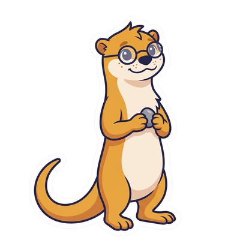
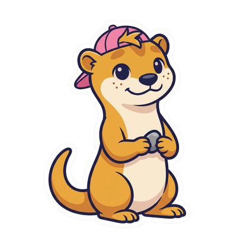

✈
19 September · all day
The calendar, the map of your places, the lists, the photos and the games to play together. Everything the two of you live, in a diary that never empties.
For iOS and Android · You come in as two, with an invitation
19 September · all day
The count starts from the day you choose, however far back it is.

The bar at the bottom is always there. It opens on the diary, and the rest is one row away.
You create the space, you send the invitation, and from there everything works.
Everything you live together, in order of time and with your photos. It is the first thing that opens, and it never empties.
Plans, evenings and holidays in a diary the two of you share. You can import what is already on your phone, choosing what to share.
Where you have been and where you want to go, on the same map. A place you wished for becomes a place you visited when you tick it off, and it stays there.
Films, trips, restaurants — and any others you want to add. Films arrive with their poster, and the reviews stay yours.
Quizzes, drawings, telepathy, truth or dare. You answer in secret and find out together — and neither of you wins against the other.
An otter who lives on the home screen and gets bigger when you really do things together. His story is just below.
An otter who lives with you and grows up alongside you. Every game you play, every place you actually go, everything you tick off your lists makes him a little bigger.

Sea otters sleep floating on their backs, and to keep the current from pulling them apart they hold paws. It is the simplest way we know of saying let’s stay close — even while nothing at all is happening.
Every otter has a favourite one: it keeps it in a fold of skin under its arm and carries it around for years, sometimes for life. Look at the three figures above — Philippe changes size, loses the dummy, puts on glasses. The stone is always the same one.
He does not waste away, does not fall ill, does not scold you if you disappear for a month. There is no way to make Philippe unhappy and nothing to remember to do: when you come back, he picks up where he was.
A space belongs to two people: you come in with an invitation that lasts 72 hours and works once. There are no public profiles, no followers, and nothing to show anybody else.
The score belongs to the couple, never to one of you against the other. In the games you answer in secret and find out together: you win or lose as two, and most of the time you do neither.
What you upload comes back out as a file whenever you want. The account is deleted from inside the app, without writing to anyone — and when you do it, it really does disappear.
You create your space, you send the invitation, and the diary starts from the day the two of you choose — however far back that is.